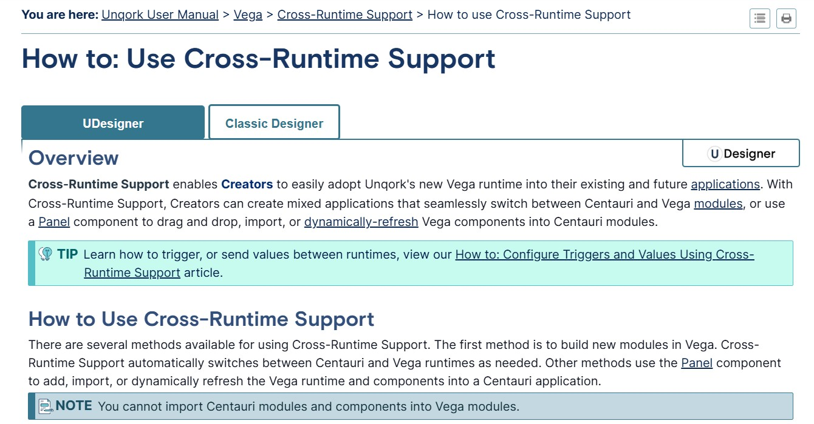
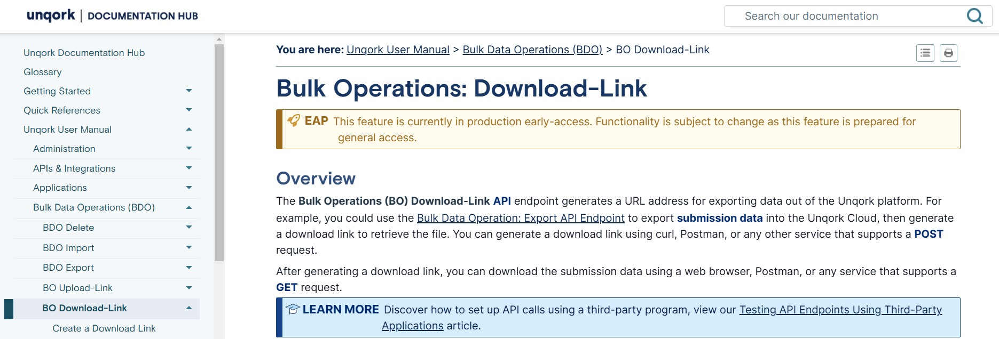
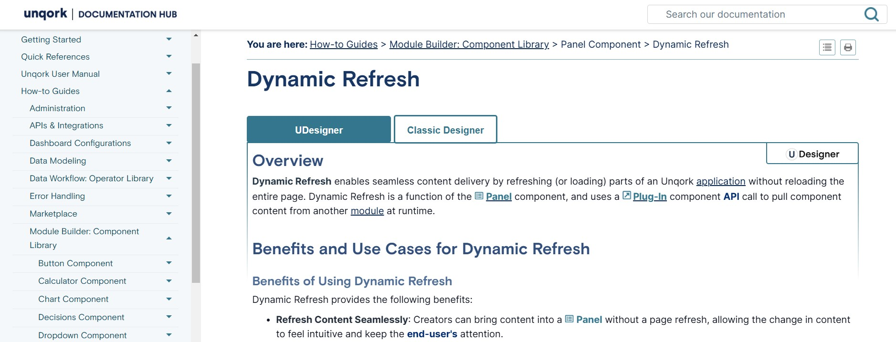
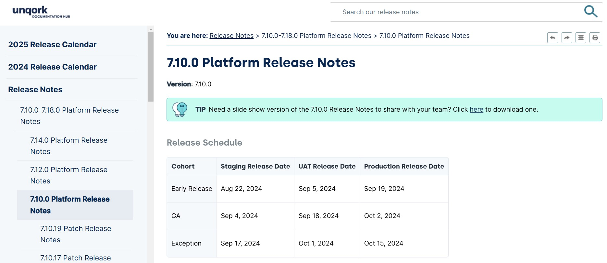

Michael Sheleman
Senior Technical Writer
Welcome! I’m Michael Sheleman, a Senior Technical Writer with over six years of experience creating clear, user-focused documentation, including API guides, procedural manuals, and training resources. I specialize in turning complex concepts into actionable content that empowers users and improves workflows. Explore my resume, portfolio, and LinkedIn, or connect with me through the contact form — I’d love to hear from you!
Accomplished Technical Writer with six years of experience crafting clear, concise, and user-centric documentation. Proficient in creating API documentation, conceptual and procedural guides, and ensuring accessibility standards meet modern-day protocols.
Experience
Senior Technical Writer, Unqork | Remote
- Led the documentation process for 36+ new feature articles annually, ensuring clarity and usability for developers and end-users.
- Managed the end-to-end document lifecycle for four developer teams.
- Streamlined bi-monthly release notes creation as part of an Agile workflow.
- Proactively researched and implemented accessible technical content meeting WCAG standards.
Technical Writer, Unqork | Remote
- Authored and published external-facing documentation for 26+ new features annually.
- Implemented documentation analytics tools, driving a 200% increase in content views within a year.
- Designed scalable documentation templates, reducing production time for future updates by 30%.
Freelance Technical Writer, Self-Employed | Remote
- Built and maintained a game wiki with 7,000+ daily views, establishing a trusted resource for the community.
- Translated and compiled weekly developer release notes, improving content accessibility for global audiences.
- Created engaging blogs and marketing content for clients, boosting brand visibility and customer engagement.
- Delivered polished, on-brand content for diverse clients in gaming and tech industries.
Customer Success and Documentation, Eventhub | Remote
- Developed and maintained Zendesk macros, triggers, and automations, reducing ticket response times by 40%.
- Authored and managed a comprehensive knowledge base, improving customer self-service success rates.
Self-Driving Test Operations Specialist, Uber ATG | San Francisco
- Conducted 2,000+ hours of autonomous vehicle test missions, producing detailed reports to inform development strategies.
- Co-authored GIS documentation for data collection over 1,290 miles of San Francisco, enabling precise mapping for self-driving technologies.
- Designed and implemented online training modules for onboarding new operators, standardizing the use of proprietary software.
- Identified and resolved software testing issues during operations, improving test efficiency by 20%.
Education
- Certified Professional Technical Communicator (CPTC™) Foundation | 2021
- Professional Scrum Master™ I (PSM I) | 2018
- San Francisco State University | 2014 | Bachelors
Skills
- Document Lifecycle Management: Research, Write, Review, Publish, Repeat
- Project Management Software: JIRA, Asana, Trello
- Image Editing Tools: Photoshop, Paintshop, Snagit
- Documentation and Code: DITA, XML, HTML, CSS, Markdown
- Editors: Madcap Flare, Zendesk, Microsoft Suite, Google Suite
- Documentation Types: API, Release Notes, User Interface, Procedural, Reference, Conceptual
- Versioning Systems: GIT, Proprietary
- Communications Time Management: Stakeholders, SMEs, Editors
Download Resume
Explore my projects and contributions in technical writing and document lifecycle management.
API Documentation
Developed an API (Application Programming Interface) guide on utilizing Unqork's Bulk Operations Download-Link API to export data, collaborating with an SME to ensure technical accuracy, and completed within a two-week agile sprint.
Link: Cross-Runtime Support

Procedueral Article
Authored a procedural guide on integrating Cross-Runtime Support in Unqork applications, incorporating custom JavaScript and design elements to enhance usability, in collaboration with an SME during a two-week agile sprint.
Link: Bulkd Data Operations: Create a Download-Link

Conceptual Article
Authored a conceptual piece on a complex feature. Documentation required in-depth research across engineering tickets, internal documentation, and an SME.
Link: Dynamic Refresh

Release Notes
Created release notes for a SaaS platform by analyzing engineering tickets, collaborating with Project Managers, and coordinating with release engineers to ensure accurate and comprehensive documentation
Link: 7.10 Release Notes
